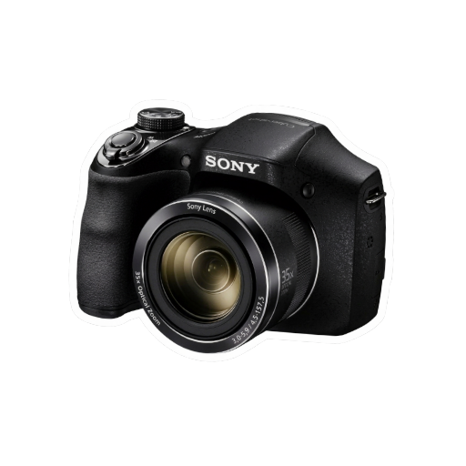
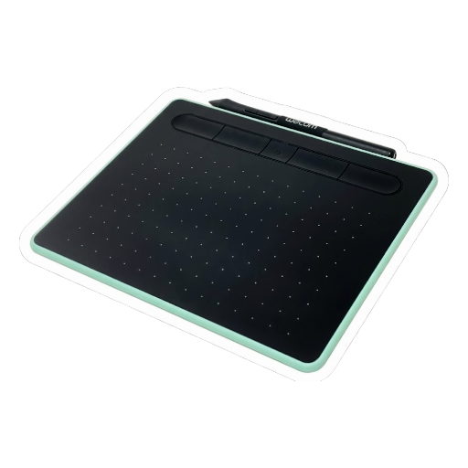
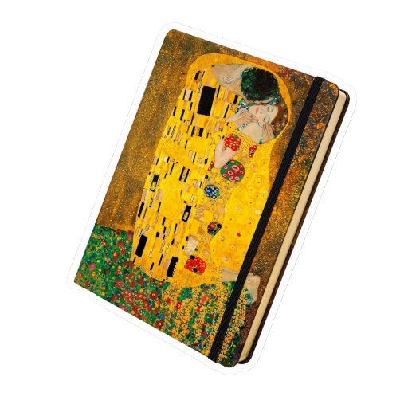

Diseño UX/UI
Desarrollo Front-End
Yamila Ramos.

Desarrollé mi portafolio desde cero para involucrarme en cada etapa del proceso. Fue una oportunidad para fortalecer mis habilidades técnicas, resolver problemas de forma autónoma y profundizar en las herramientas utilizadas, incorporando la IA para optimizar los tiempos de desarrollo y facilitar la implementación de nuevas funcionalidades.





¿Cómo es mi proceso creativo?
Observar y entender qué puede mejorar
Encuentro inspiración en profesionales con mayor experiencia. Identifico qué recursos podría incorporar para desarrollar una propuesta propia.
Investigar, probar y dejar que las ideas evolucionen
Busco entender qué funciona, qué no y por qué. Disfruto explorar alternativas hasta encontrar una dirección que represente al proyecto.
Convierto la inspiración en una creación concreta
Llevo la inspiración a la práctica, experimentando con distintas herramientas de diseño y tecnologías hasta materializar mis ideas.
Publicar, recibir feedback y seguir aprendiendo
Analizo qué podría funcionar mejor, qué corregir o simplificar para encontrar un equilibrio entre lo que imaginé y el resultado final.
Inspiración cotidiana
Fuera de la pantalla.
Te presento mi galería personal. Cuando no estoy diseñando, me vas a encontrar sacando fotos, pintando o buscando inspiración en algún rincón de la naturaleza. Muchas de las ideas que terminan en mis proyectos empiezan ahí.